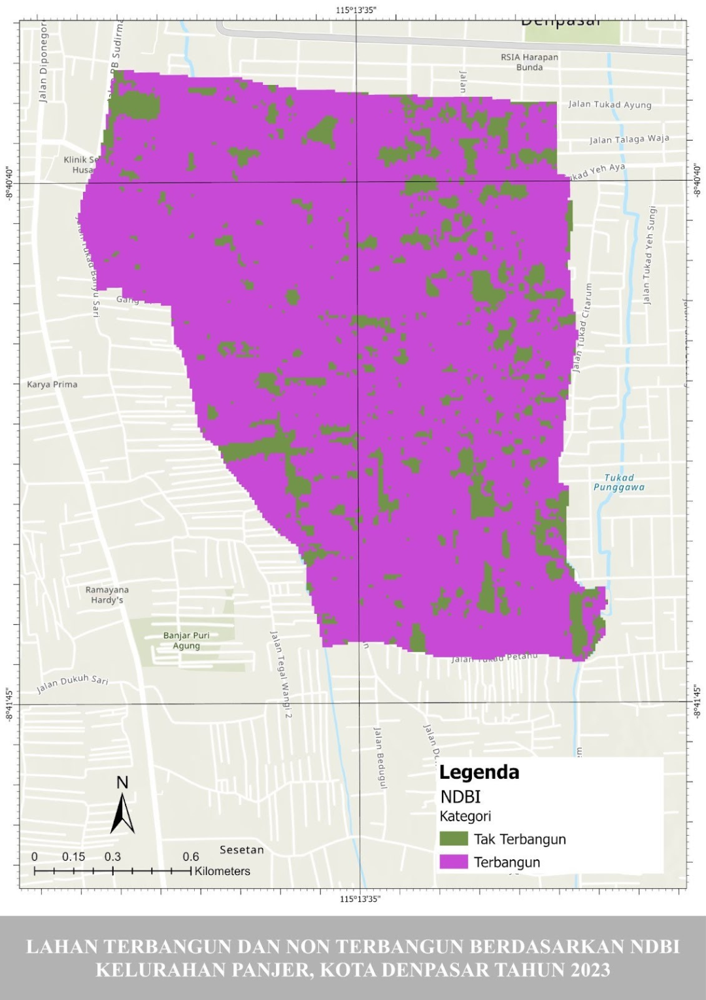
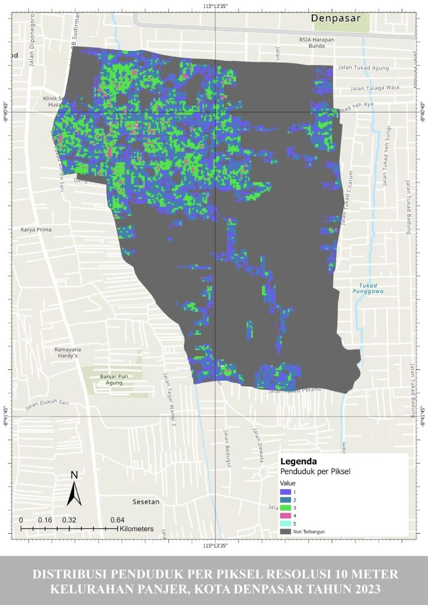
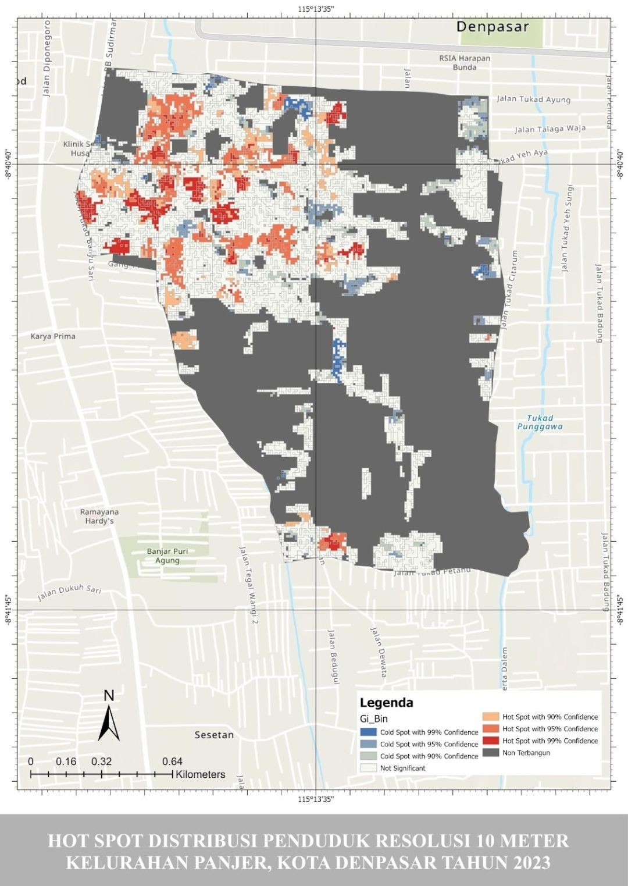
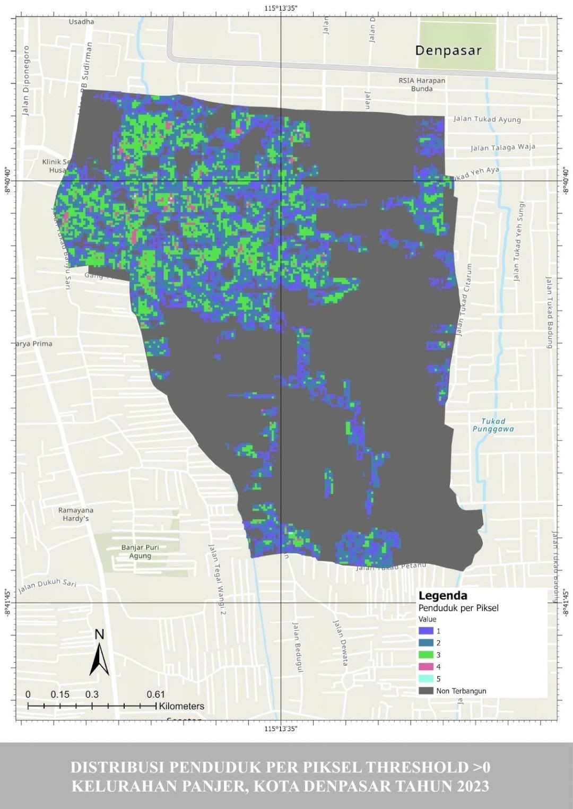
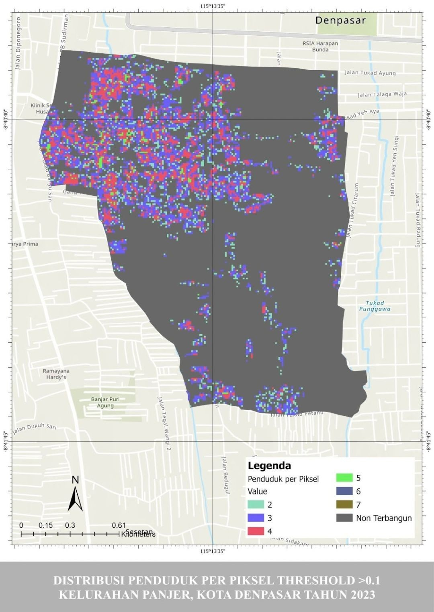
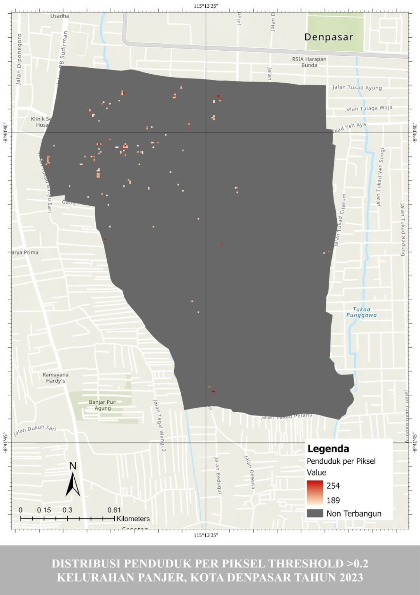
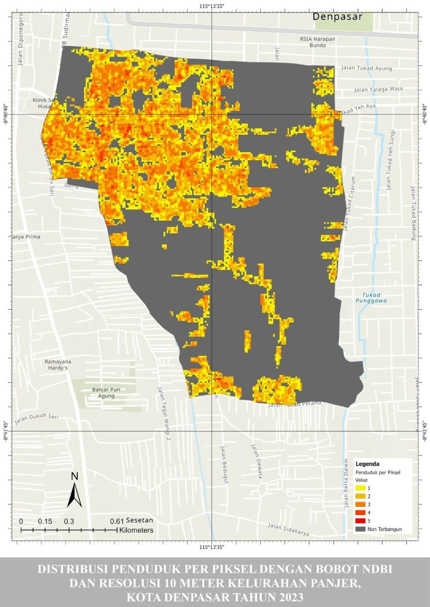
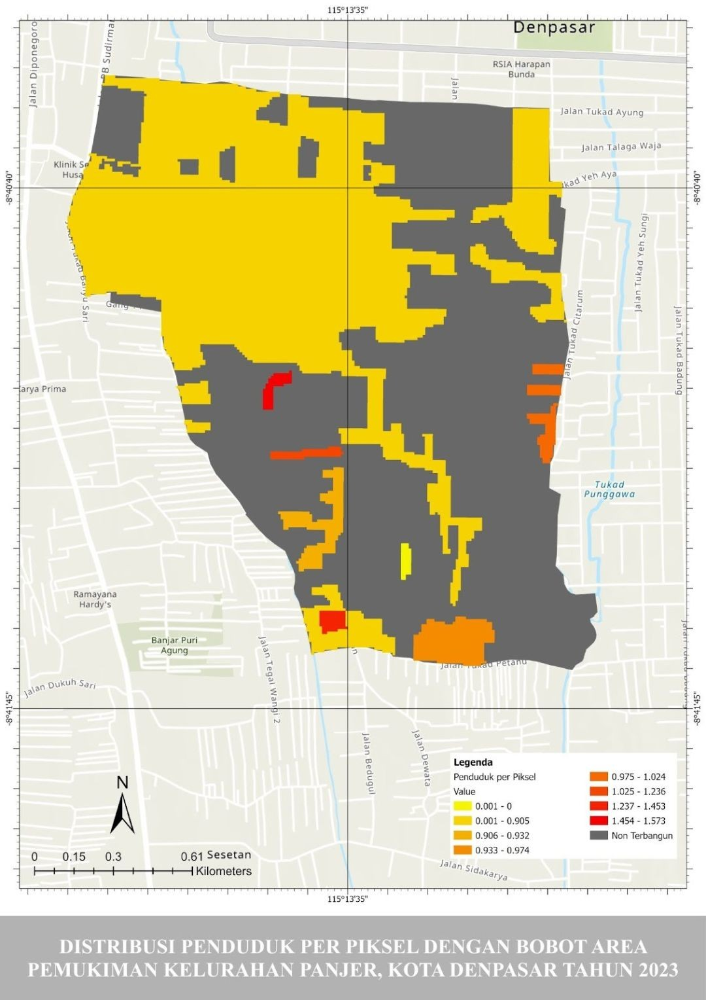

Distribusi Penduduk ke Unit Piksel di Kelurahan Panjer, Denpasar: Pemanfaatan NDBI Sentinel-2 dan Uji Sensitivitasnya
Latar belakang
Data kependudukan resmi dilaporkan per wilayah administrasi. Untuk Kelurahan Panjer di Denpasar Selatan, misalnya, kita tahu ada 23.228 penduduk pada 2023, tetapi tidak tahu di bagian mana mereka paling padat. Padahal perencanaan layanan publik, penentuan jalur evakuasi, dan penanganan bencana membutuhkan gambaran yang lebih rinci daripada satu angka untuk seluruh kelurahan.
Salah satu caranya adalah mendistribusikan penduduk ke unit piksel citra satelit, dengan keterbangunan lahan sebagai petunjuk: lokasi terbangun diasumsikan dihuni, lahan tidak terbangun tidak. Indikator yang dipakai adalah Normalized Difference Built-Up Index (NDBI) dari citra Sentinel-2. Namun sebaran yang dihasilkan sangat bergantung pada pilihan analisis, yaitu ambang batas NDBI, resolusi piksel, dan cara pembobotan. Karena itu proyek ini tidak berhenti pada pembuatan peta, tetapi juga menguji seberapa sensitif hasilnya terhadap ketiga pilihan tersebut.
Data yang digunakan
| Data | Format Data | Jenis Data | Sumber |
|---|---|---|---|
| Citra Sentinel-2 (1 Januari – 31 Desember 2023, tutupan awan < 10%), Band 8 (NIR) dan Band 11 (SWIR) | Raster | Sekunder | Google Earth Engine |
| Batas administrasi Kelurahan Panjer | Shapefile | Sekunder | Badan Informasi Geospasial |
| Area pemukiman Kelurahan Panjer | Shapefile | Sekunder | Badan Informasi Geospasial |
| Jumlah penduduk Kelurahan Panjer tahun 2023 (23.228 jiwa) | Tabular | Sekunder | BPS / Disdukcapil Kota Denpasar |
Metode
Pengolahan dilakukan di Google Earth Engine (GEE) dan ArcGIS Pro. Tahapannya:
- Menghitung NDBI di GEE. Citra Sentinel-2 tahun 2023 disaring berdasarkan batas kelurahan dan tutupan awan di bawah 10%, lalu diambil nilai mediannya. NDBI dihitung dengan rumus (Band 11 − Band 8) / (Band 11 + Band 8), kemudian dipotong sesuai batas kelurahan dan diekspor ke ArcGIS dengan resolusi 10 m.
- Mengklasifikasikan area terbangun. Nilai NDBI negatif diasumsikan sebagai lahan tidak terbangun dan nilai positif sebagai lahan terbangun.
- Menyamakan data. Shapefile pemukiman dipotong sesuai batas kelurahan dan diubah menjadi raster dengan Polygon to Raster, lalu resolusinya disamakan menjadi 10 m dengan Project Raster. NDBI kemudian dipotong sesuai area pemukiman dengan Extract by Mask, difilter dengan Extract by Attributes (nilai lebih besar dari 0), dan diklasifikasikan ulang dengan Reclassify.
- Mendistribusikan penduduk ke piksel. Zonal Statistics as Table menjumlahkan nilai NDBI terbangun (1.504,19). Jumlah penduduk dibagi nilai tersebut sehingga diperoleh faktor kalibrasi 15,44. Raster Calculator mengalikan NDBI dengan faktor ini, lalu fungsi Int membulatkannya menjadi bilangan bulat. Hasilnya masih di bawah jumlah penduduk sebenarnya (17.102), sehingga dihitung rasio kalibrasi (jumlah penduduk asli dibagi hasil perhitungan, yaitu 1,35) lalu dikalikan kembali ke distribusi per piksel.
- Menentukan pemusatan. Analisis Hot Spot Getis-Ord Gi* dengan fixed distance band dipakai untuk melihat di mana penduduk terkonsentrasi.
- Uji sensitivitas. Proses yang sama diulang untuk tiga skenario: ambang NDBI (>0, >0,1, dan >0,2), resolusi piksel (10 m, 30 m, dan 50 m dengan resampling dan proyeksi UTM zona 50S), serta pembobotan alternatif memakai luas area pemukiman sebagai pengganti NDBI.
Hasil
Temuan utamanya: penduduk Panjer terkonsentrasi di bagian barat laut kelurahan, dan sebaran per pikselnya sangat dipengaruhi pilihan analisis. Ambang NDBI yang makin tinggi memadatkan penduduk ke piksel yang makin sedikit, resolusi menentukan seberapa dekat total penduduk dengan data resmi, dan metode pembobotan mengubah pola dari halus menjadi berblok.
Langkah pertama adalah memisahkan lahan terbangun dari tidak terbangun. Nilai NDBI berkisar dari −0,465 hingga 0,358. Dengan batas nol, 27.806 piksel (85%) berklasifikasi terbangun dan 4.641 piksel (15%) tidak terbangun, sehingga bangunan hampir menutupi seluruh kelurahan.

Dari 23.228 penduduk yang dialokasikan ke piksel 10 m, hampir semuanya menempati piksel dengan hanya 1 sampai 3 jiwa (sekitar 98% piksel terisi), dan nilai paling sering adalah 2 jiwa per piksel. Total hasil perhitungan adalah 24.820, sekitar 7% di atas jumlah sebenarnya. Pada peta, penduduk mendominasi bagian barat laut kelurahan.
| Penduduk per piksel | Jumlah piksel | Penduduk × jumlah piksel |
|---|---|---|
| 1 | 3.494 | 3.494 |
| 2 | 5.232 | 10.464 |
| 3 | 3.248 | 9.744 |
| 4 | 272 | 1.088 |
| 5 | 6 | 30 |
| Total | 24.820 | |

Analisis hot spot menegaskan pola itu: pemusatan penduduk terjadi di sisi kiri atas kelurahan, yaitu bagian tengah dari area sebaran yang terlihat pada peta sebelumnya.

Sensitivitas pertama datang dari ambang batas NDBI. Semakin tinggi ambangnya, semakin sedikit piksel yang lolos, tetapi jumlah penduduk yang harus ditampung tetap sama. Akibatnya penduduk menumpuk di piksel yang tersisa: pada ambang >0 terdapat 12.252 piksel dengan 1–5 jiwa per piksel, pada >0,1 tersisa 8.305 piksel dengan 2–7 jiwa, dan pada >0,2 hanya 130 piksel yang tersisa dengan 189–254 jiwa per piksel. Angka terakhir ini tidak masuk akal untuk piksel 10 m × 10 m, sehingga ambang yang terlalu tinggi memberi gambaran sebaran yang menyesatkan. Pada peta hot spot, pola pemusatan bahkan nyaris hilang di ambang ini.
| Ambang NDBI | Piksel terisi | Penduduk per piksel | Total penduduk | Selisih dari data resmi (23.228) |
|---|---|---|---|---|
| > 0 | 12.252 | 1–5 | 24.820 | +1.592 |
| > 0,1 | 8.305 | 2–7 | 26.221 | +2.993 |
| > 0,2 | 130 | 189–254 | 26.190 | +2.962 |



Sensitivitas kedua datang dari resolusi. Makin kasar resolusinya, makin lebar rentang jumlah penduduk per piksel, karena satu piksel mencakup area yang makin luas. Rentangnya naik dari 1–5 jiwa pada 10 m, menjadi 1–36 pada 30 m, dan 1–89 pada 50 m. Total penduduknya juga bergeser: resolusi 30 m menghasilkan angka paling dekat dengan data resmi (selisih hanya 31 jiwa), sedangkan resolusi 10 m paling jauh. Kemungkinan penyebabnya adalah pembulatan ke bilangan bulat pada piksel kecil yang hanya berisi 1–5 jiwa, yang menumpuk menjadi selisih besar saat dijumlahkan.
| Resolusi | Piksel terisi | Penduduk per piksel | Total penduduk | Selisih dari data resmi (23.228) |
|---|---|---|---|---|
| 10 m | 12.252 | 1–5 | 24.820 | +1.592 |
| 30 m | 1.500 | 1–36 | 23.259 | +31 |
| 50 m | 540 | 1–89 | 23.053 | −175 |
Sensitivitas ketiga datang dari cara pembobotan. Bila NDBI diganti dengan luas area pemukiman sebagai bobot, penduduk dialokasikan menurut besar area dan total hasilnya persis 23.228, sama dengan data resmi. Pola petanya sangat berbeda: dengan NDBI, sebaran tampak lebih merata dan halus, sedangkan dengan luas pemukiman sebaran berbentuk blok-blok sesuai poligon pemukiman. Pada data yang dipakai, satu poligon besar menutupi sekitar 90% luas pemukiman sehingga menyerap sekitar 90% penduduk, dan sebarannya menjadi hampir datar di dalam poligon itu. Pembobotan ini juga tidak menangkap pemusatan penduduk di dalam poligon yang sama.


Kelebihan dan kekurangan kedua metode pembobotan dirangkum berikut:
| Aspek | Bobot NDBI | Bobot luas area pemukiman |
|---|---|---|
| Kelebihan | Dirancang untuk membedakan area terbangun dan non-terbangun, bisa mendeteksi pemusatan bangunan padat, dan mudah diterapkan pada wilayah luas karena berbasis citra satelit. | Bertumpu pada data pemukiman yang jelas, sehingga estimasi lebih akurat bila data pemukimannya akurat, dan lebih mencerminkan lokasi tempat orang benar-benar tinggal. |
| Kekurangan | Kurang cocok untuk desa dengan pemukiman yang tidak masif, dan dapat keliru pada bangunan tinggi atau penggunaan lahan yang bervariasi. | Akurasi sepenuhnya bergantung pada data pemukiman, kurang variatif karena memperhitungkan luas keseluruhan, dan tidak menangkap pemusatan (hot spot) kepadatan. |
Kesimpulan
Penduduk di tingkat kelurahan dapat dipetakan ke tingkat piksel dengan NDBI, tetapi hasilnya bukan fakta tunggal: ambang batas, resolusi, dan bobot sama-sama mengubah sebaran dan jumlah penduduk yang dihasilkan. Ambang yang terlalu ketat menjejalkan penduduk ke sedikit piksel secara tidak realistis, resolusi yang terlalu halus membuat pembulatan lebih berpengaruh sehingga total makin menyimpang, dan pembobotan luas pemukiman menghasilkan peta yang berblok sehingga tidak menangkap pemusatan. Tidak ada metode yang unggul di semua kondisi. NDBI lebih cocok untuk wilayah perkotaan yang terbangun masif, sedangkan luas pemukiman lebih cocok untuk wilayah yang heterogen seperti pedesaan. Karena itu, sebaran penduduk per piksel yang akan dipakai untuk perencanaan atau penanganan bencana sebaiknya selalu disertai uji sensitivitas, dan pilihan ambang, resolusi, serta bobot perlu disesuaikan dengan kondisi wilayah dan tujuan analisisnya.
← View other projects